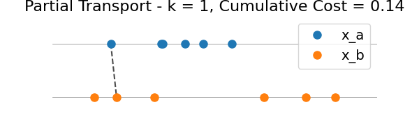
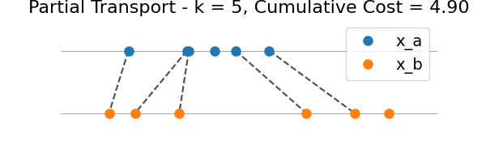
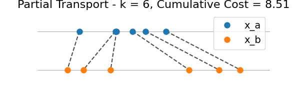

Note
Go to the end to download the full example code.
Partial Wasserstein in 1D
This script demonstrates how to compute and visualize the Partial Wasserstein distance between two 1D discrete distributions using ot.partial.partial_wasserstein_1d.
We illustrate the intermediate transport plans for all k = 1…n, where n = min(len(x_a), len(x_b)).
# sphinx_gallery_thumbnail_number = 5
import numpy as np
import matplotlib.pyplot as plt
from ot.partial import partial_wasserstein_1d
def plot_partial_transport(
ax, x_a, x_b, indices_a=None, indices_b=None, marginal_costs=None
):
y_a = np.ones_like(x_a)
y_b = -np.ones_like(x_b)
min_min = min(x_a.min(), x_b.min())
max_max = max(x_a.max(), x_b.max())
ax.plot([min_min - 1, max_max + 1], [1, 1], "k-", lw=0.5, alpha=0.5)
ax.plot([min_min - 1, max_max + 1], [-1, -1], "k-", lw=0.5, alpha=0.5)
# Plot transport lines
if indices_a is not None and indices_b is not None:
subset_a = np.sort(x_a[indices_a])
subset_b = np.sort(x_b[indices_b])
for x_a_i, x_b_j in zip(subset_a, subset_b):
ax.plot([x_a_i, x_b_j], [1, -1], "k--", alpha=0.7)
# Plot all points
ax.plot(x_a, y_a, "o", color="C0", label="x_a", markersize=8)
ax.plot(x_b, y_b, "o", color="C1", label="x_b", markersize=8)
if marginal_costs is not None:
k = len(marginal_costs)
ax.set_title(
f"Partial Transport - k = {k}, Cumulative Cost = {sum(marginal_costs):.2f}",
fontsize=16,
)
else:
ax.set_title("Original 1D Discrete Distributions", fontsize=16)
ax.legend(loc="upper right", fontsize=14)
ax.set_yticks([])
ax.set_xticks([])
ax.set_ylim(-2, 2)
ax.set_xlim(min(x_a.min(), x_b.min()) - 1, max(x_a.max(), x_b.max()) + 1)
ax.axis("off")
# Simulate two 1D discrete distributions
np.random.seed(0)
n = 6
x_a = np.sort(np.random.uniform(0, 10, size=n))
x_b = np.sort(np.random.uniform(0, 10, size=n))
# Plot original distributions
plt.figure(figsize=(6, 2))
plot_partial_transport(plt.gca(), x_a, x_b)
plt.show()
indices_a, indices_b, marginal_costs = partial_wasserstein_1d(x_a, x_b)
# Compute cumulative cost
cumulative_costs = np.cumsum(marginal_costs)
# Visualize all partial transport plans
for k in range(n):
plt.figure(figsize=(6, 2))
plot_partial_transport(
plt.gca(),
x_a,
x_b,
indices_a[: k + 1],
indices_b[: k + 1],
marginal_costs[: k + 1],
)
plt.show()
- 

- 
- 
Total running time of the script: (0 minutes 0.289 seconds)